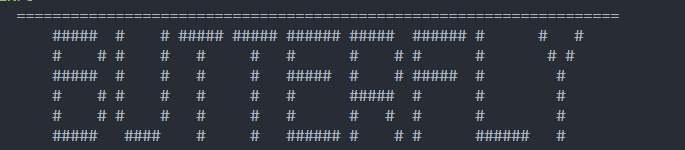
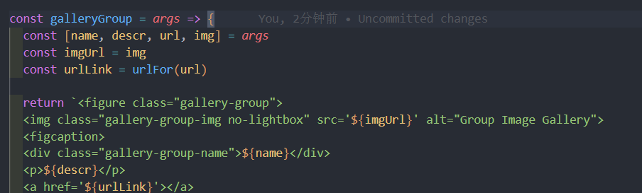

标签外挂
描述：在Butterfly主题中，还自带一些额外的组件提供更多功能和UI方面的强化。
它们并不是标准的markdown格式，所以被称为标签外挂（Tag Plugins）。
每个模块分为显示效果和代码两个部分。
需要安装插件点这里，本篇文章大部分内容都来自这里
1 | npm uninstall hexo-renderer-marked --save |
label 标签
显示效果
效果：文字 ，文字 ，文字 ，文字 ，文字 ，文字 ，文字 。
代码
1 | <!-- 样式 --> |
Hexo引用自己的文章
是文字名，不是标题名（名称.md）
没有文章标题的话，显示文章的title{% post_link 文章文件名（不要后缀） 文章标题（可选） %}
1 | {% post_link 标签外挂 %} |
Note
显示效果
代码
1 | {% note no-icon modern %} |
行内图片
语法1
{% inlineimage 图片链接, height=高度（可选） %}
对于文章页面中的图片1
2这是 {% inlineimage image.png %} 一段话。
这是  一段话。
对于标签页面路径为标签名文件夹/图片文件夹/图片1
{% inlineimage ./index/image.jpg %}
单张图片
1 | {% image 链接, width=宽度（可选）, height=高度（可选）, alt=描述（可选）, bg=占位颜色（可选） %} |
文章页1
{% image image.png %}
标签页1
{% image ./index/image.jpg %}
Gallery 相册图库
如果显示有问题
修改项目根目录\themes\butterfly\scripts\tag\gallery.js

修改这一行为const imgUrl = urlFor(img)=>const imgUrl = img
显示效果
代码
1 | <div class="gallery-group-main"> |
Gallery 相册
我使用时候有一点点问题，有时候图片数量会导致页面不停抖动
显示效果
代码
1 | {% gallery %} |
选项卡（Tabs）
显示效果
这是第一块
这是第二块
这是第三块
代码
1 | {% tabs 标签一 %} |
折叠栏（Toggle）
两种 显示效果 这是内容第一种
第二种
这是一个折叠框
1
2
3{% folding 参数（可选）, 标题 %}
内容
{% endfolding %}1
2
3
4
5
6
7
8
9
10
11
12
13
14
15
16
17{% folding 可以有图片 %}

{% endfolding %}
{% folding cyan open, 查看默认打开的折叠框 %}
这是一个默认打开的折叠框。
{% endfolding %}
{% folding green, 查看代码测试 %}
假装这里有代码块（代码块没法嵌套代码块）
{% endfolding %}
{% folding yellow, 查看列表测试 %}
- haha
- hehe
{% endfolding %}
时间轴（timeline）
不带颜色
2022
01-02
这是测试页面
带颜色
2022
01-02
一
01-03
二
01-03
三
1 | {% timeline 2022 %} |
文章页不渲染html
1 | {% raw %} |
文章置顶
在文章头添加1
2
3
4---
sticky: 1
#置顶
---
卡片链接样式
显示效果
代码
1 |
|